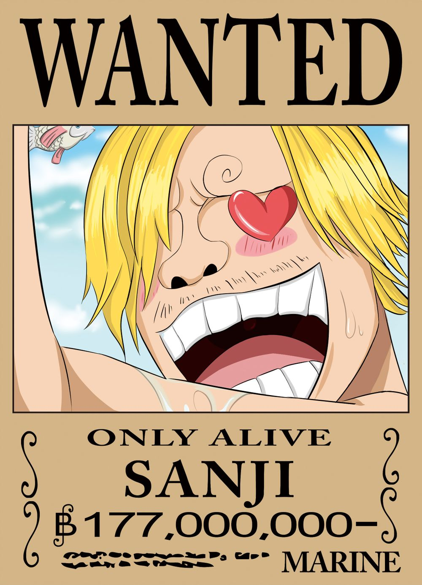

《人物简介》山治

特征
草帽海贼团第五名成员，职位是厨师，黄发，有着卷曲眉毛，只露出右边眼睛，常吸烟（美国版动画则以棒棒糖来代替），能力是用脚进行踢击，脚力至少高达三百千克力以上，穿戴武器为不怕斩撃和耐热的亮擦皮鞋，对命中物准确无比。为避免沾污厨师神圣的双手而不用手战斗，但若对手是食材或在厨房内战斗的话就另当别论。遇到事情能冷静的分析思考，并做出正确的判断（女性面前除外），为伙伴解难。生气时会骂粗话，口癖是“狗屎○○”，并显露粗暴的性格。喜爱女性，是个“拥女主义者”，只要是女人都会极力保护，而且保护范围很广，老人小孩全都算在内，常为女性船员的营养着想，料理以新鲜食材为主，快坏掉的食材才煮给男性船员们吃。讲求原则，遵守犹如王子般骑士道精神，曾被人称为王子或猎人，常与索隆吵架，索隆给他取了“白痴国的王子”、“好色卷眉毛”、“漂亮眉毛”、或“死飞镖”等不同绰号，与索隆是死对头同时也是要好的伙伴，曾经想过利用透明果实的能力来偷窥女生澡堂，梦想寻找全世界的海洋食材聚集的传说之海“ALL BLUE”。
名言:
“我只是尽我的本份，煮食物给想吃的人，这是厨师的天职！！”
不能犯的三宗罪：
第一：在其面前自称厨师。
第二：浪费食物。
第三：侮辱其同伴。
简介
山治（日文名：サンジ 英文名：Sanji，台译：香吉士或桑吉 声优：平田广明）是在日本漫画及动画《海贼王》中登场的人物（注：小时候声优是大谷育江）。草帽海贼团三主力之一。路飞的第4个伙伴，左眼常被其黄发盖住，爱吸烟，总是和卓洛吵架，喜欢穿黑色西装，有超强的腿技及菜刀法。最爱女人，很花心但很有风度。坚持死也不踢女人的原则——所谓的骑士道。
厨师精神
香吉士无论对厨师、厨艺，或是对食物的态度也是非常认真。在与CP7的瓦杰的战斗时，香吉士充分地表现出他对食物的名称、特点、甚至重量也有清晰的了解。
在霍波迪上尉面前说出：“在海上激怒了厨师，等于是自杀的行为！”及“不可以浪费食物” 与CP7的瓦杰战斗时说：“手和菜刀对厨师来说都是神圣的，在战斗中从不使用就是我的原则。”及“菜刀不是剑，不可以用来砍人。” 与CP9的贾布拉的战斗中，香吉士使用‘恶魔风脚·画龙点睛’打败贾布拉后说出“神创造食物，恶魔创造调味料。味道...好像太辛辣了一点。”